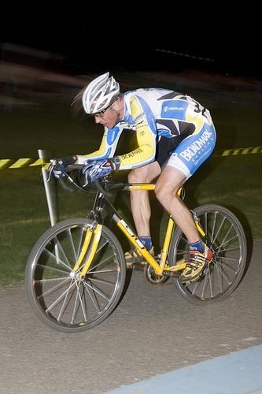
0.531221
0.553183

0.582992

0.654683

0.655481

0.665890

0.697513

0.716933
0.719672

0.744673
| Target image 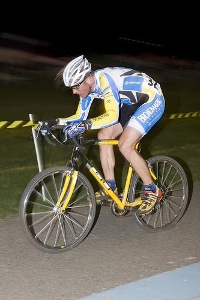 | 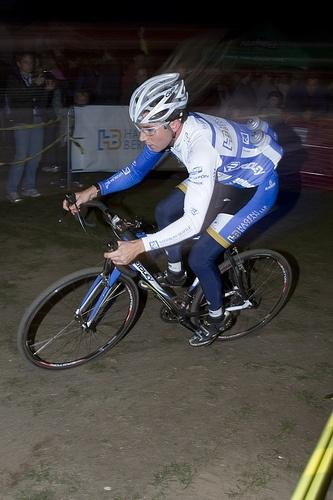 0.531221 | 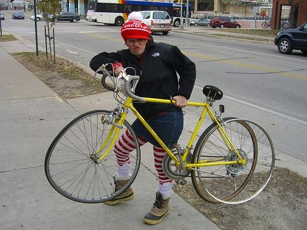 0.553183 | 0.582992 | 0.654683 | 0.655481 | 0.665890 | 0.697513 | 0.716933 | 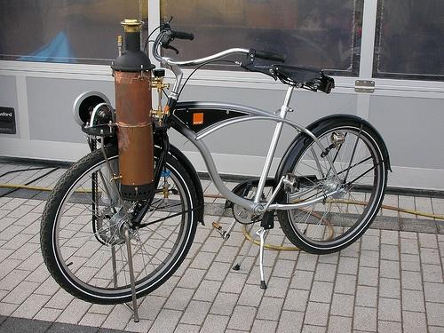 0.719672 | 0.744673 |
Target image |  24193.937500 |  17527.490234 |  17093.984375 |  16521.332031 |  12712.207031 |  10986.942383 |  9545.943359 | 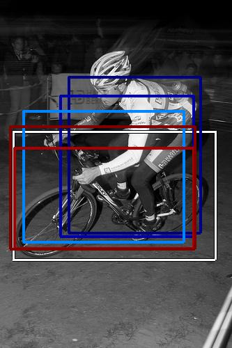 8932.200195 |  7677.339355 | 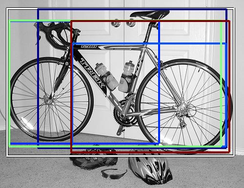 6906.125977 |
| Target image 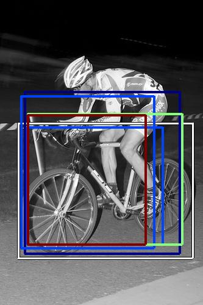 |  20746.751953 |  16869.240234 |  16147.335938 |  12640.737305 |  12366.999023 |  11429.545898 | 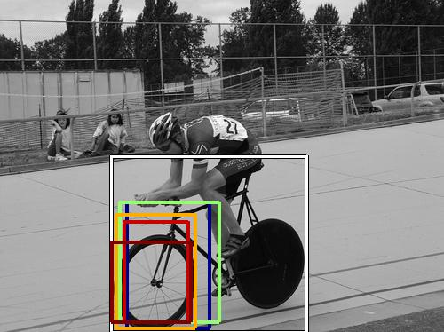 10255.577148 |  10193.947266 |  10160.613281 |  9850.447266 |
Target image |  25578.386719 |  19658.382812 |  17988.271484 |  13963.218750 |  11213.943359 | 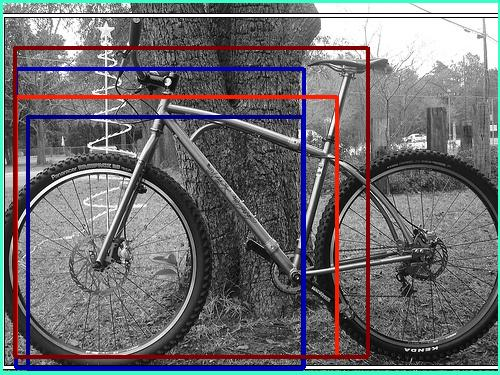 10641.680664 |  10142.786133 |  9605.058594 | 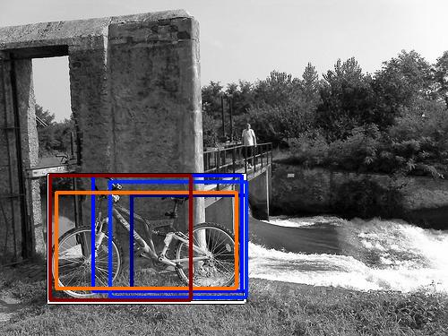 9435.214844 |  9242.429688 |
Target image |  26999.289062 |  13468.213867 |  12006.193359 |  11805.214844 |  11368.847656 | 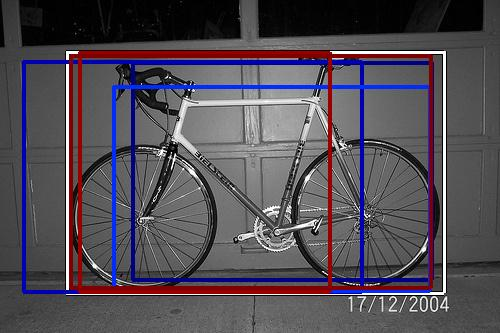 11045.472656 |  9015.647461 | 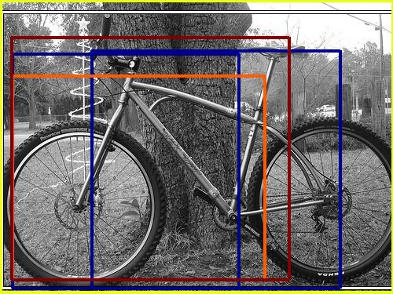 8457.271484 |  8383.352539 |  8347.490234 |